The Northern Tier
To begin, I am following a series of biking maps from the Adventure Cycling Association. The route is called the Northern Tier and runs all the way from Bar Harbor, Maine to Anacortes, Washington. I'm doing approximately half the route -- from Minneapolis to Anacortes.
This whole trip started when my housemate, Jake, said, "I'm thinking of going on a long bike trip... I don't know where and I don't know anything about bike trips".
"I'm in" I said. I didn't know anything about bike trips either. I didn't even know "bike trips" are more commonly referred to as "bike tours" by cyclists. The extent of my bike knowledge was this: My parents bought me a bike in middle school. It rolled. I still used it.
Jake's timing couldn't have been more perfect. I was about to graduate college, had some spare cash, and an entire summer free (this never happens) and was looking for an adventure.
Preparation and Gearheads
Touring can get expensive. For those interested in touring (or gear!), I'm creating a separate blog post about my gear and the cost of the trip here.
Minneapolis to Fargo
 Day 1 --> noobs
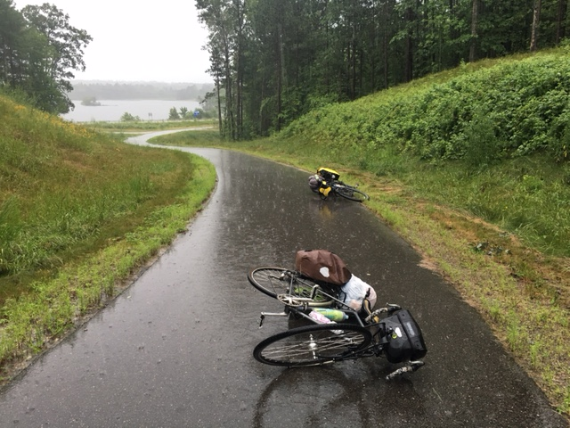
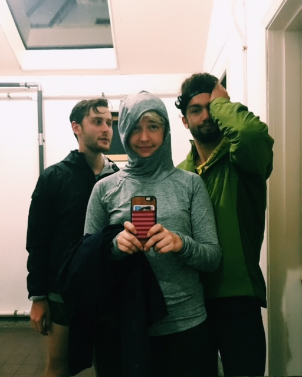
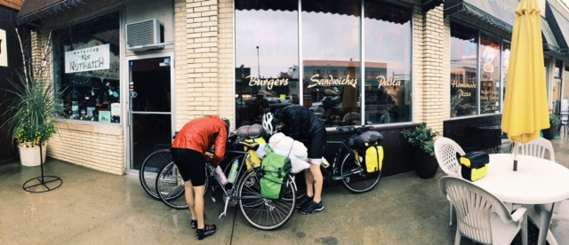
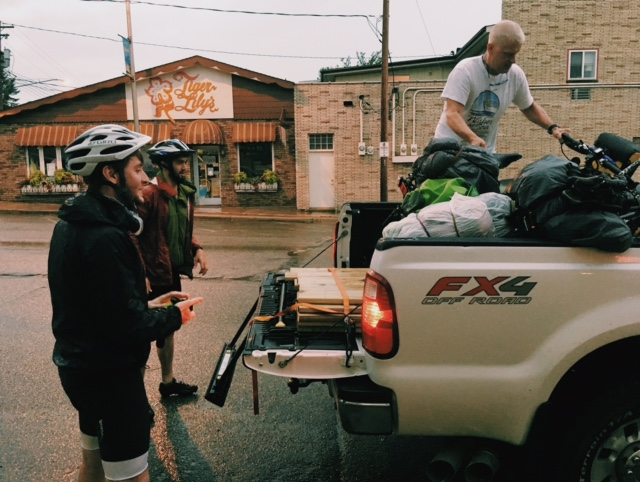
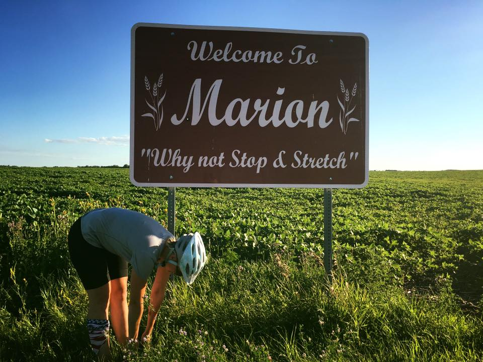
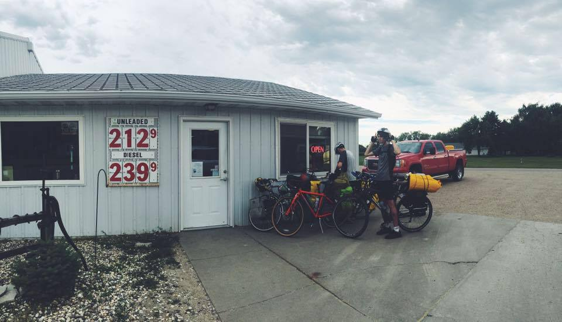
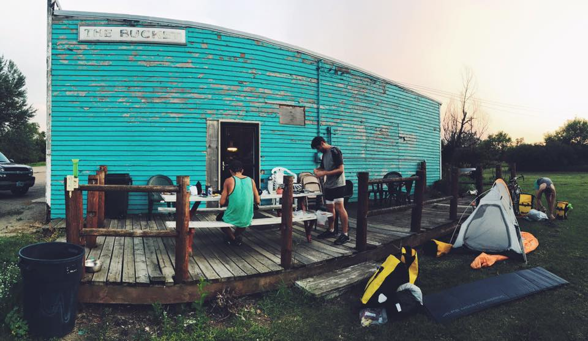
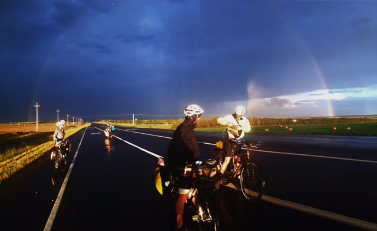
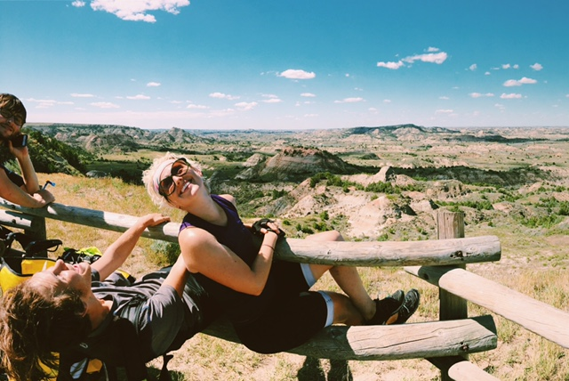
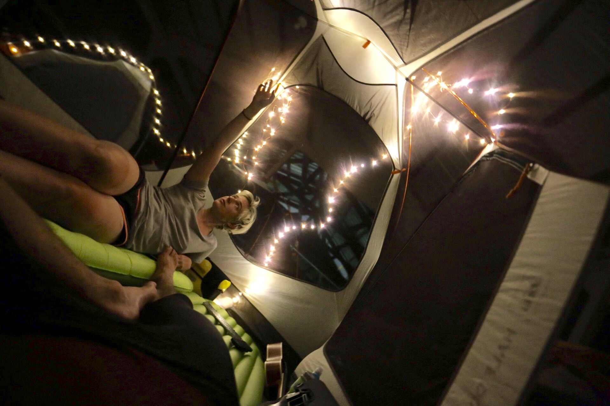
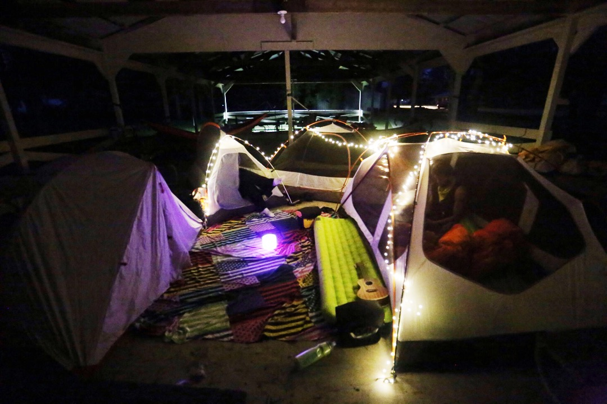
Day 1 --> noobs
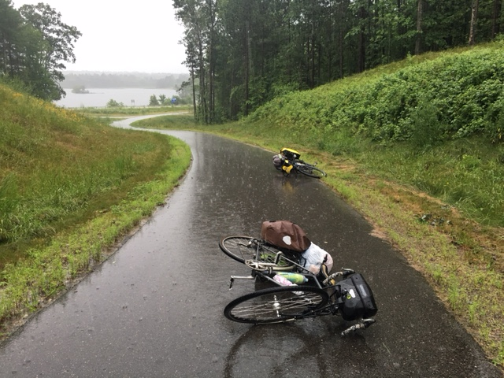
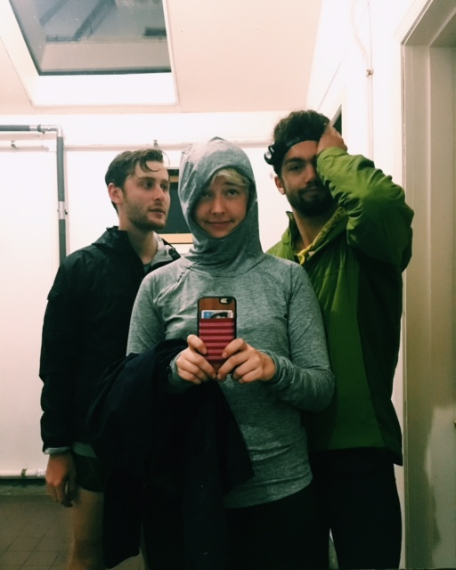
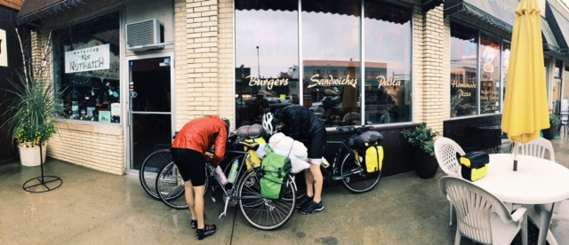
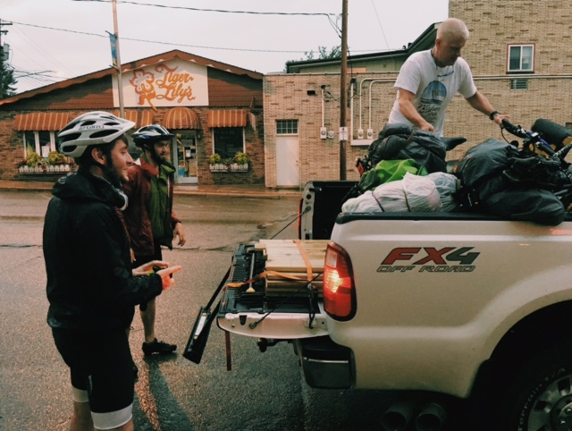
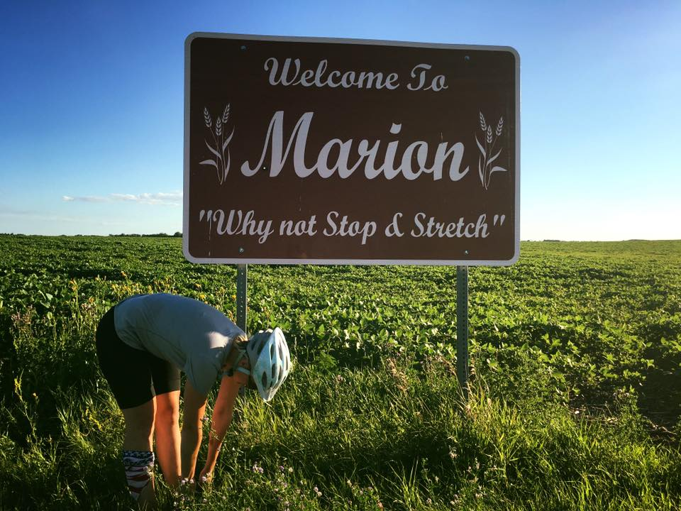
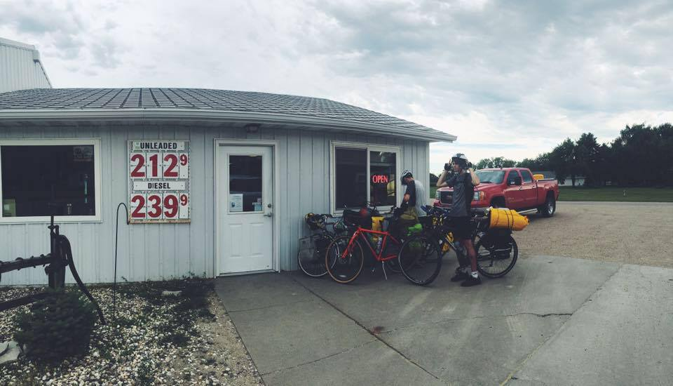
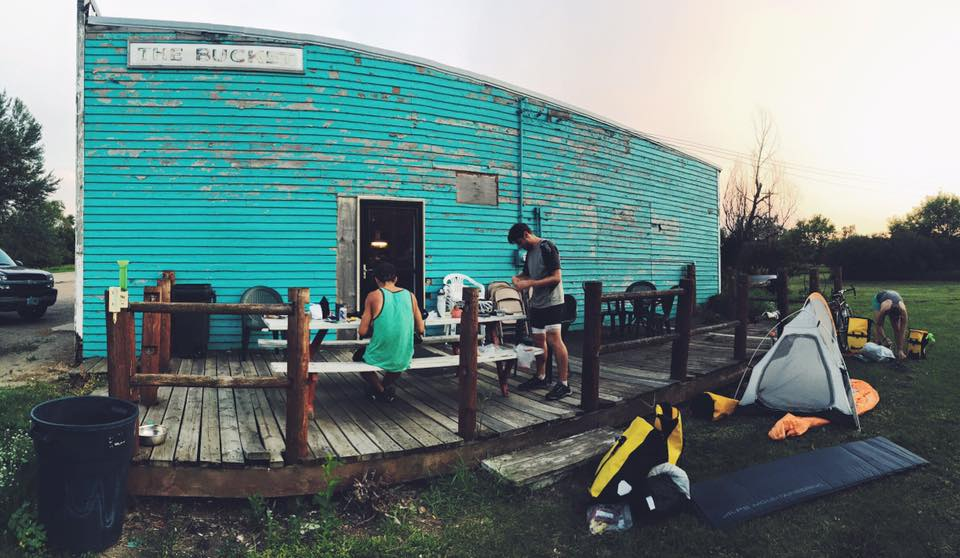
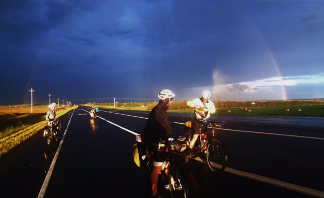
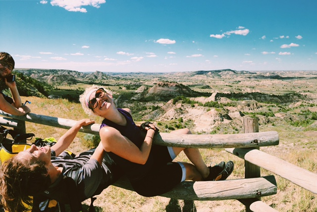
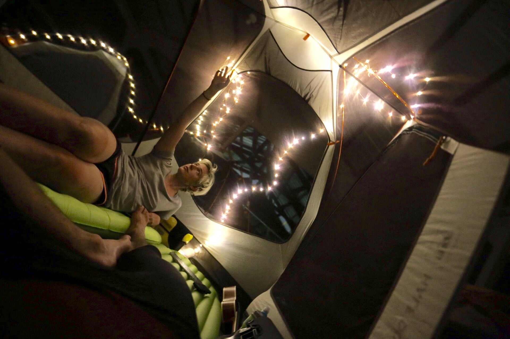
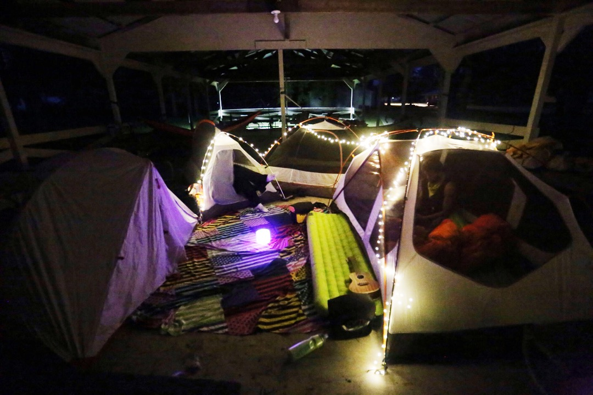